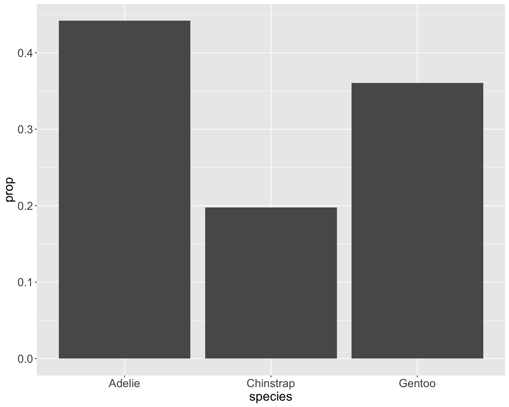

[1] Adelie Adelie Adelie Adelie Adelie Adelie
Levels: Adelie Chinstrap GentooPrinciples and Visualizations for 1D Categorical Data
2024-08-28
In the beginning…
Michael Florent van Langren published the first (known) statistical graphic in 1644

Plots different estimates of the longitudinal distance between Toledo, Spain and Rome, Italy
i.e., visualization of collected data to aid in estimation of parameter

John Snow Knows Something About Cholera

Charles Minard’s Map of Napoleon’s Russian Disaster

Florence Nightingale’s Rose Diagram

Milestones in Data Visualization History

How to Fail this Class:

What about this spiral?

Infographics to communicate a story (check out FlowingData for more examples)

Alberto Cairo and the art of insight

Area plots

Each area corresponds to one categorical level
Area is proportional to counts/frequencies/percentages
Differences between areas correspond to differences between counts/frequencies/percentages
Bar charts

Behind the scenes: statistical summaries

Why does this matter?


Friends Don’t Let Friends Make Pie Charts